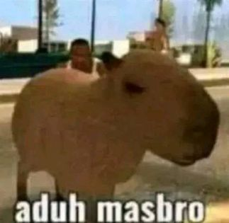
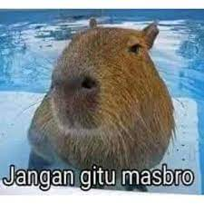

Kapibara atau kapibara besar (Hydrochoerus hydrochaeris) merupakan jenis hewan pengerat terbesar yang
masih ada di dunia (hewan pengerat terbesar yang telah punah adalah Phoberomys pattersoni) yang
merupakan anggota genus Hydrochoerus. Kapibara merupakan hewan asli daerah tropis dan lembap di Amerika
Selatan. Kapibara dapat ditemukan di daerah Timur Andes dari wilayah Kanal Panama sampai daerah utara
Kolombia dan Venezuela, Uruguay, dan Provinsi Buenos Aires di Argentina. Kapibara mendiami sabana dan hutan
lebat, dan hidup di dekat perairan. Spesies ini sangat sosial dan dapat ditemukan berkelompok terdiri dari 100
individu, namun biasanya hidup berkelompok terdiri dari 10-20 individu. Kapibara diburu untuk diambil daging dan
kulitnya, dan juga minyak dari kulitnya yang tebal berlemak. Kapibara tidak dianggap sebagai spesies terancam.
 Mas bro ini ada-ada saja